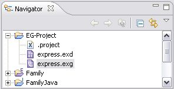
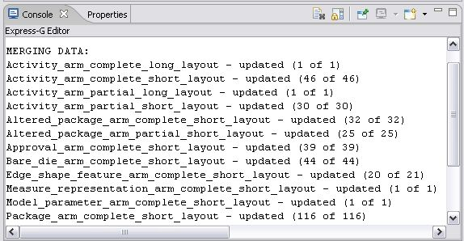

Merge Repository
Follow the routine to merge the current repository with the imported one:
Select an applicable repository in the
Navigator
window (see
Figure 1
).
Perform the
Import from Express repository
.
The merging results are displayed in the
Console
window (see
Figure 2
).

Figure 1.
Navigator window with selected repository

Figure 2.
Console window with merging results
To top
Copyright © 2005-2008
LKSoftWare GmbH
. All Rights Reserved.
JSDAI is a registered trade mark of LKSoftWare GmbH.